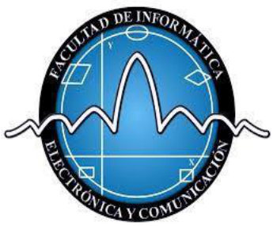

FACULTAD DE INFORMÁTICA, ELECTRÓNICA Y COMUNICACIÓN
LIC. GERENCIA DE COMERCIO ELECTRÓNICO

NOMBRE:
Arnold Campbell
CÉDULA:
8-984-1572
MATERIA:
EMPRENDEDURISMO
PROFESOR:
OSIRIS DANIELS
TEMA:
Del estudio a la calle: análisis comparativo de las estrategias de marca de Alo Yoga, lululemon y Gymshark
FECHA:
14 de septiembre de 2026
Del estudio a la callePágina 1 de 3
Resumen
Este ensayo compara tres marcas de ropa deportiva de estilo de vida que compiten en el mismo mercado con manuales de juego opuestos. Alo Yoga convirtió el bienestar en un objeto de deseo de lujo; lululemon institucionalizó la comunidad local como canal de distribución; Gymshark inventó, casi sin presupuesto, el marketing de creadores tal como lo conocemos. Se analizan cuatro dimensiones —estrategias clave, inspiración, características y beneficios— para explicar por qué las tres tuvieron éxito con recetas incompatibles entre sí.
Palabras clave
athleisure
posicionamiento
marketing de influencia
comunidad
experiencia de marca
I
Tres orígenes, un mismo mercado
El athleisure dejó de ser una categoría de ropa para convertirse en un lenguaje cultural: hoy una prenda deportiva comunica disciplina, estatus y pertenencia mucho antes de que alguien entre a un gimnasio. Ese desplazamiento —de la función al significado— explica por qué el mercado se volvió tan disputado. En Estados Unidos, Nike concentra alrededor del 31,6 % del gasto mensual en la categoría y lululemon el 21,2 %, pero la amenaza real para el líder ya no viene de los gigantes históricos, sino de una camada de retadores privados que le quitan clientes de su núcleo (Chain Store Guide, 2025).
Este ensayo selecciona tres de esas marcas por una razón metodológica: comparten categoría, público y rango de edad, pero llegaron al éxito por caminos que se contradicen entre sí. Alo Yoga apostó por el deseo y la escasez; lululemon, por la comunidad organizada y la ingeniería textil; Gymshark, por la velocidad digital y un precio accesible. Compararlas permite aislar qué decisiones son verdaderamente estratégicas y cuáles son solo estética.
Alo YogaLos Ángeles · 2007
Su nombre es un acrónimo —air, land and ocean: aire, tierra y océano— y funciona como declaración de propósito. La fundaron Danny Harris y Marco DeGeorge, amigos de la infancia que llegaron al yoga por necesidad: DeGeorge se recuperaba de una lesión de espalda y Harris manejaba un cuadro de ansiedad. Antes de vender una sola prenda de yoga habían construido un negocio de serigrafía en Los Gatos, California, que escalaron hasta convertirlo en Color Image Apparel, un fabricante de básicos por volumen (Wikipedia, 2026; SUCCESS, 2025).
Esa base industrial es la clave que casi nadie menciona: Alo nació sabiendo fabricar. Sobre ella montó un posicionamiento de moda —studio to street— que trasladó el yoga desde el tapete hasta la alfombra roja. Hoy la compañía es 100 % de sus fundadores, con participaciones iguales, y fue valorada en torno a los 10.000 millones de dólares cuando contrataron al banco Moelis para explorar inversión (Forbes, 2025).
lululemonVancouver · 1998
Chip Wilson abrió el primer local como estudio de yoga de día y tienda de noche. De ahí salió el hallazgo fundacional de la marca: si el producto se prueba en el contexto donde se usa, la tienda deja de ser un punto de venta y pasa a ser un punto de prueba. Sobre esa intuición lululemon construyó tejidos propietarios, un programa de embajadores locales y una identidad —la sweatlife— que convierte transacciones en relaciones (Latterly, 2025).
Es la única de las tres que cotiza en bolsa, lo que la obliga a crecer con métricas públicas: cerró el año fiscal 2024 con 10.600 millones de dólares de ingresos y el fiscal 2025 con 11.100 millones, sosteniendo un margen bruto cercano al 60 % que ninguna marca de escala comparable alcanza.
GymsharkBirmingham · 2012
Ben Francis tenía 19 años, una máquina de coser, una impresora de serigrafía y el garaje de sus padres. Sin presupuesto para publicidad, hizo lo único que podía: enviar producto gratis a los youtubers de fitness que él mismo veía, como Nikki Blackketter y Lex Griffin. En 2012 nadie llamaba a eso influencer marketing; las marcas establecidas consideraban YouTube una pérdida de tiempo (Collabstr, 2024).
El punto de inflexión llegó en la feria BodyPower de Birmingham en 2013: un conjunto deportivo se viralizó en Facebook y generó 30.000 libras en ventas en treinta minutos. Ocho años después la marca alcanzaba el estatus de unicornio, y su facturación superó por primera vez las 600 millones de libras en el ejercicio 2024.
Figura 1. Catorce años separan a la marca más antigua de la más joven; las tres alcanzan escala global en la misma década. Elaboración propia con datos de Forbes (2025), Wikipedia (2026) y TheIndustry.fashion (2025).
I · Tres orígenes1
Del estudio a la callePágina 2 de 3
II
Análisis comparativo
La diferencia de tamaño entre las tres es enorme, y sin embargo las tres son consideradas casos de éxito. Eso obliga a comparar no solo la escala, sino la eficiencia del modelo que la produjo: lululemon factura casi catorce veces más que Gymshark, pero Gymshark llegó a 600 millones de libras habiendo empezado con una máquina de coser y sin presupuesto de medios.
lululemon · FY2025 (reportado)
Alo Yoga · 2024 (estimado)
Gymshark · FY2024 (reportado)
Figura 2. Ingresos anuales aproximados en millones de dólares. † Alo es una empresa privada y no publica estados financieros: la cifra es una estimación de mercado para 2024, tras superar los 1.000 millones en 2022. ‡ Gymshark reportó 607,3 millones de libras en el ejercicio cerrado en julio de 2024, convertidos aquí a dólares a tipo aproximado. lululemon reportó 11.100 millones de dólares en el fiscal 2025. Elaboración propia.
La escala, sin embargo, no explica el posicionamiento. Si se cruzan dos ejes —el precio al que la marca decide vender y el motor que usa para crecer— las tres ocupan casillas distintas y ninguna compite de frente con las otras dos en su propio terreno.
Figura 3. Mapa de posicionamiento según precio y motor de crecimiento. Las tres marcas evitan la competencia frontal: ocupan cuadrantes distintos del mismo mercado. Elaboración propia a partir de Retail TouchPoints (2025) y Business Model Analyst (2026).
Tabla 1 · Cuatro dimensiones comparadas
Alo YogaLos Ángeles, 2007
lululemonVancouver, 1998
GymsharkBirmingham, 2012
Estrategia clave
Siembra masiva de creadores (unas 32.700 publicaciones patrocinadas en doce meses) reutilizada como contenido propio; escasez y colaboraciones limitadas.
Comunidad institucionalizada: programa de embajadores, clases en tienda y eventos; plan «Power of Three ×2» para duplicar ingresos.
Marketing de creadores antes de que existiera el término: producto gratis a youtubers de nicho y venta directa sin intermediarios.
Inspiración
Mindfulness, yoga y la cultura de bienestar de Los Ángeles, cruzada con los códigos visuales de la moda de lujo.
El yoga entendido como disciplina técnica; el rendimiento humano y la vida activa de Vancouver.
La cultura del gimnasio y del levantamiento de pesas, narrada desde YouTube por sus propios practicantes.
Características
Estética studio to street; tiendas-santuario con estudio de yoga y café; plataforma Alo Moves con más de un millón de suscriptores; capital 100 % de los fundadores.
Tejidos propietarios y ajuste técnico; margen bruto cercano al 60 %; empresa cotizada; crecimiento internacional de doble dígito.
Precio accesible; cadencia digital acelerada; comunidad joven; expansión omnicanal reciente (Londres, Nueva York, Dubái, Ámsterdam).
Beneficios
Valoración cercana a 10.000 millones de dólares y deseabilidad de marca sin publicidad tradicional; 12 % de preferencia declarada en la categoría.
Liderazgo de preferencia (≈ 50 %) y 11.100 millones de dólares de ingresos; rentabilidad sostenida y lealtad medible.
Costo de adquisición mínimo y margen defendible: 607,3 millones de libras y un EBITDA ajustado de 51,7 millones en FY2024.
II · Análisis comparativo2
Del estudio a la callePágina 3 de 3
III
Qué explica el éxito
Del contraste anterior se desprenden cuatro decisiones que las tres marcas tomaron —cada una a su manera— y que constituyen el verdadero denominador común del caso.
01
El nicho como palanca, no como límite
Ninguna nació apuntando a las masas. Alo se dirigió a la practicante de yoga de Los Ángeles, lululemon a la clase de yoga de Vancouver, Gymshark a un puñado de aficionados al gimnasio en YouTube. El nicho les dio algo que la publicidad masiva no compra: credibilidad de origen. La escala llegó después, y llegó porque el nicho la legitimó.
02
El contenido ajeno convertido en canal propio
Las tres entendieron que la prueba social de un tercero vale más que un anuncio. La diferencia está en la ejecución: Gymshark lo hizo por necesidad y con microcreadores; Alo lo industrializó, sembrando producto a escala y reciclando el mejor material en correo, publicidad pagada, fichas de producto y pantallas de tienda; lululemon lo formalizó en un programa de embajadores con contrato y vínculo local.
03
La tienda como medio de comunicación
Alo no abre tiendas: abre sanctuaries con estudio de yoga, café y club de bienestar —169 a finales de 2025, incluido un edificio de seis plantas en Seúl y una apertura prevista en los Campos Elíseos—. El espacio físico produce el contenido que alimenta lo digital, invirtiendo la lógica habitual del comercio electrónico. lululemon había hecho lo mismo veinte años antes con clases gratuitas en tienda.
04
Coherencia entre el discurso y la operación
El propósito solo funciona cuando tiene consecuencias operativas. Alo respalda su relato de bienestar con Alo Gives, que lleva yoga y mindfulness gratuitos a escuelas y familias; lululemon financia eventos deportivos globales; Gymshark sostiene una comunidad de atletas que participan del diseño. Cuando el discurso no se traduce en presupuesto, el consumidor lo detecta.
Conclusión
Las tres marcas demuestran que en un mercado maduro no existe una única fórmula de éxito, sino una exigencia común: elegir un terreno y ser radicalmente consistente en él. Alo Yoga ganó vendiendo pertenencia a una estética aspiracional; lululemon, vendiendo pertenencia a una comunidad real; Gymshark, vendiendo pertenencia a una subcultura que ya existía y a la que ninguna marca grande escuchaba. El riesgo que enfrentan es también el mismo y es simétrico: Alo puede diluir su deseabilidad si crece demasiado rápido; lululemon puede perder su núcleo frente a retadores más nítidos; Gymshark puede erosionar su margen al entrar al comercio físico. La lección final para cualquier empresa es que la estrategia no consiste en imitar al líder, sino en identificar qué está dispuesto a no hacer.
Video relacionado
«How Alo Yoga Became a Billion-Dollar Brand Without Traditional Advertising»
Recorrido en video por el modelo de crecimiento de Alo: siembra de creadores, tiendas-santuario y bienestar como producto. Complementa la sección II de este ensayo.
Nota metodológica: Alo Yoga y Gymshark son empresas privadas; sus cifras de ingresos provienen de reportes de prensa especializada y estimaciones de mercado, no de estados financieros auditados. Todas las fuentes fueron consultadas en septiembre de 2026.